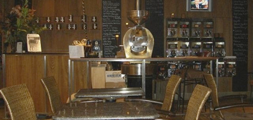

Diaries of a teenaged second

Life, Liberty and my Second Blog
Wednesday, October 1, 2008

So we played about a thousand games in Coakville, and hit up this stellar coffee joint after most of them. I think it was called “bean tree”, or “green bean”, or “green trees” or maybe “pot of gold”... nonetheless they made some fine mocha-chinos and Brandon (he’s alive) enjoyed his Nutty Irishmen. Who wouldn’t?
Big Shout Out to the Fanset team. I got two of their numbers! Who would’ve thought we were capable of making new friends.
So we trekked to my Aunts house and got all set up with free beds. Marlon-Brandon and I got to share the pullout couch and everything was fine until someone started grinding coffee at 1am.
I think Willy lost some more hair watching us on Sunday, so some rest that night did us good. All in All another fine weekend and the team is gellin’ like we’re wearing Dr. Scholls.